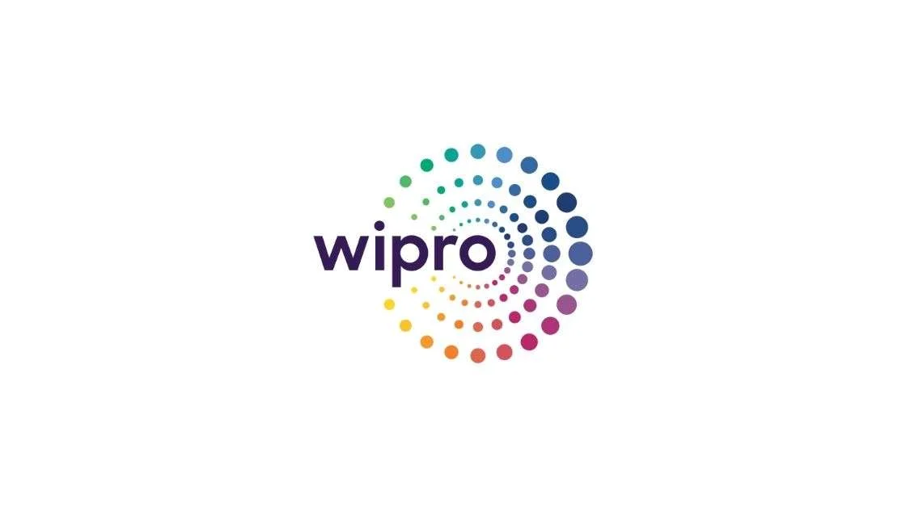

Wipro Recruitment 2022 for WADiC
Wipro Recruitment 2022 for WADiC | Apply Now!
Wipro has announced a job notification for the post of WADiC. A student from various disciplines can apply for Wipro Recruitment 2022. Interested and eligible candidates can read more details below

| Wipro Recruitment 2022 | |||
|---|---|---|---|
| 1 | Company name | Wipro | |
| 2 | Post Name | WADiC | |
| 3 | Salary | 15,488 /Month | |
| 4 | Experience | freshers | |
| 5 | Job Location | Bangalore (Work From Home) | |
| 6 | Batch | 2022/21/20 | |
Job Description:
Wipro is hiring candidates for the post of Wipro Academy for Digital Consulting ( WADiC)
Job Responsibilities:
▪︎ Because the unique programme methodology sets you apart.
▪︎ Undergo structured training programmes in technical and functional streams by SMEs and account mentors before deployment into live projects
▪︎ Opportunity to pursue roles including Business Analyst/Functional Consultant through mentor-led training
▪︎ Pursue a Wipro sponsored Master of Business Administration (MBA) programme from a Premier Institute, while garnering full-time work experience with us
▪︎ Join us as ‘Scholar Trainee – WADiC.
Eligibility Criteria:
▪︎ Graduation in B. Com (Computer Applications) with 50% or 5.0 CGPA or its equivalent
▪︎ 10th Standard: 50% or above
▪︎ 12th Standard: 50% or above
▪︎ Year of Passing: 2020, 2021, 2022
▪︎ One backlog is allowed till the Offer stage. The offer will be subject to all backlogs being cleared at the time of offer.
▪︎ Full-time course recognized by the Central/State Government of India. Candidates with part-time or correspondence or distance learning education in degree, 10th or 12th are not eligible.
Preferred skill:
▪︎ First-year stipend: INR 15,488 per month
▪︎ Second-year stipend: INR 17,533 per month
▪︎ Third-year stipend: INR 19,618 per month
About Wipro:
Wipro Limited is an Indian multinational corporation that provides information technology, consulting, and business process services. The Fortune India 500 ranks it the 29th largest Indian company by total revenue. It is also ranked the 9th largest employer in India with over 200,000 employees.
How to Apply for Wipro Recruitment 2022?
▪︎ Interested and Eligible candidates can apply for this drive online by scrolling down and clicking on Apply HERE.